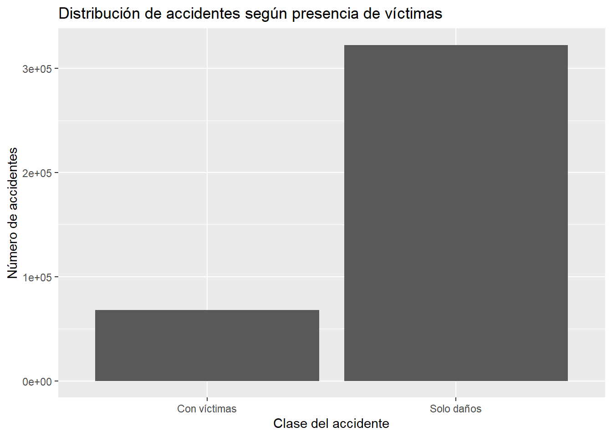
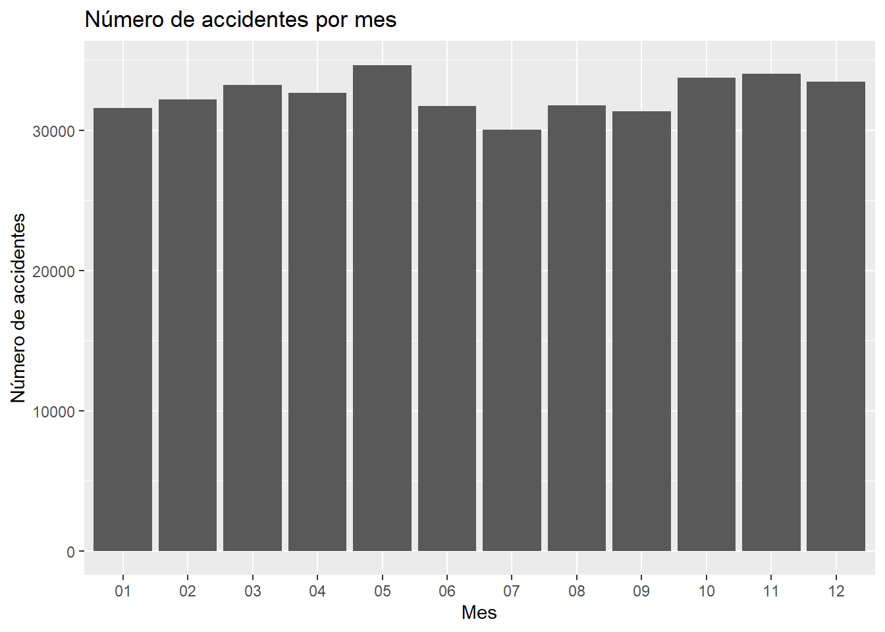
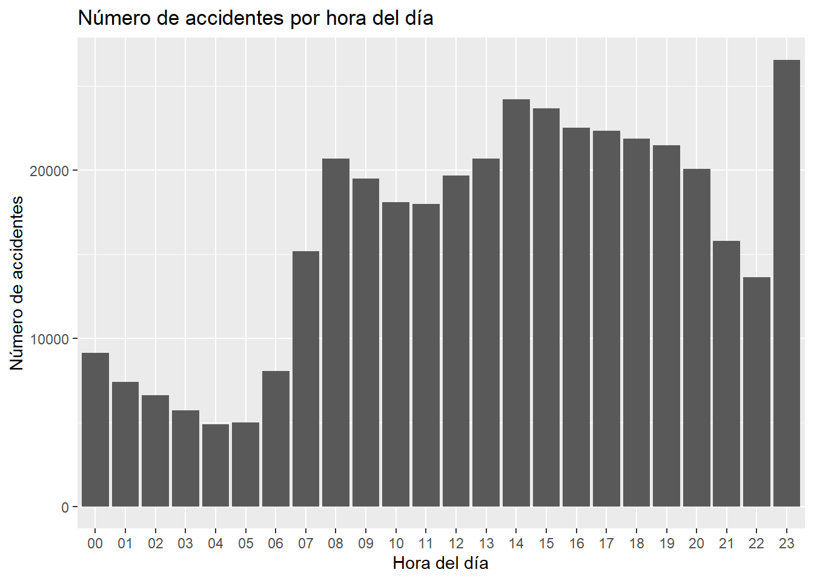
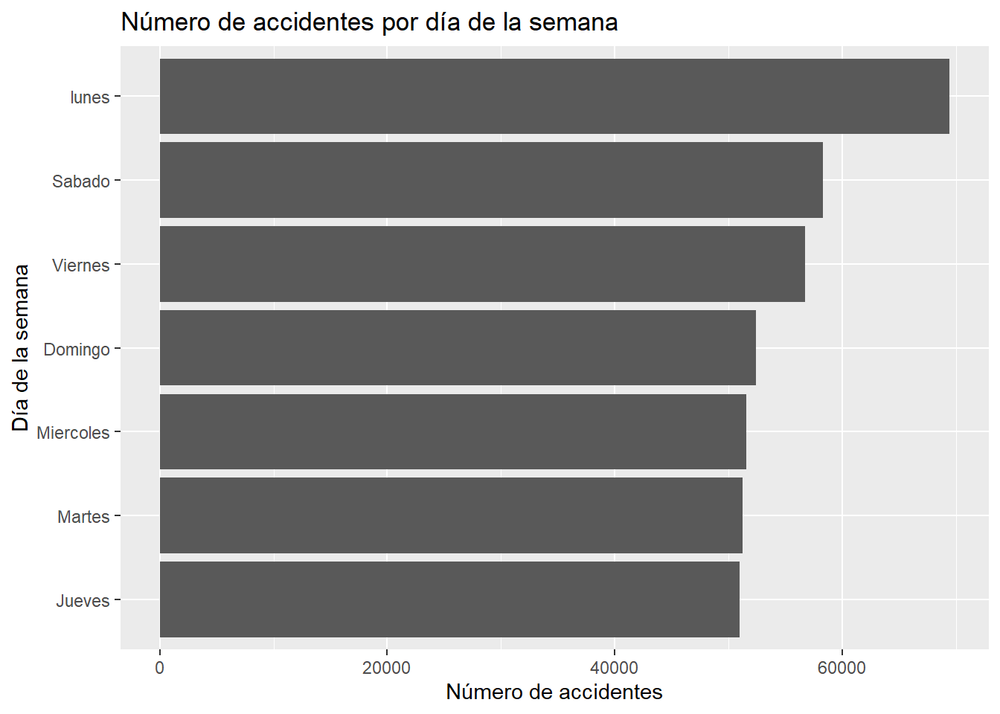
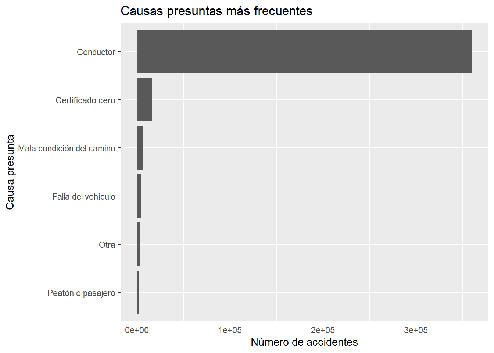
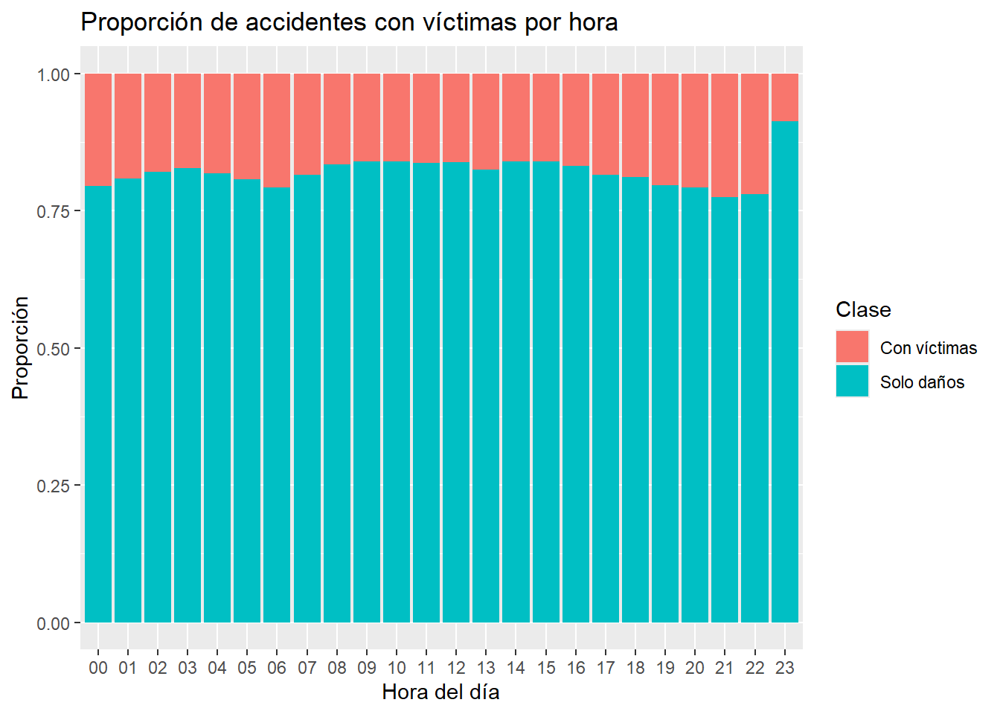
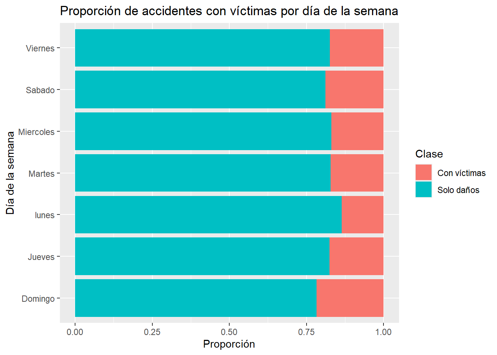

Al finalizar este capítulo, el lector será capaz de:
Explicar qué es el análisis exploratorio de datos.
Cargar una base preparada previamente.
Revisar la estructura de un conjunto de datos.
Analizar la distribución de una variable respuesta.
Construir tablas de frecuencia.
Elaborar gráficas de barras con ggplot2.
Interpretar patrones iniciales antes de construir modelos.
Formular conclusiones preliminares a partir de datos reales.
3.2 Introducción
Después de preparar los datos, el siguiente paso en un proyecto de aprendizaje automático es explorarlos.
El análisis exploratorio de datos, también conocido como Exploratory Data Analysis o EDA, consiste en revisar, resumir, visualizar e interpretar los datos antes de construir modelos.
Esta etapa es fundamental porque permite responder preguntas como:
¿Cuántos registros tiene la base?
¿Cuántas variables contiene?
¿Qué tipo de variables tenemos?
¿Hay más accidentes con víctimas o más accidentes de solo daños?
¿En qué meses ocurren más accidentes?
¿A qué horas son más frecuentes?
¿Qué tipos de accidente predominan?
¿Qué causas aparecen con mayor frecuencia?
Antes de aplicar algoritmos como regresión logística, árboles de decisión o bosques aleatorios, necesitamos conocer la base con la que vamos a trabajar.
Un buen modelo empieza con una buena comprensión de los datos.
3.3 Cargar paquetes
En este capítulo utilizaremos los siguientes paquetes:
Code
library(readr)
Warning: package 'readr' was built under R version 4.5.3
Code
library(dplyr)
Warning: package 'dplyr' was built under R version 4.5.3
Adjuntando el paquete: 'dplyr'
The following objects are masked from 'package:stats':
filter, lag
The following objects are masked from 'package:base':
intersect, setdiff, setequal, union
Code
library(ggplot2)
Warning: package 'ggplot2' was built under R version 4.5.3
Si alguno no está instalado, puedes instalarlo con:
Code
install.packages(c("readr", "dplyr", "ggplot2"))
3.4 Opciones generales del capítulo
Para que el libro no muestre mensajes o advertencias innecesarias, usamos la siguiente configuración:
3.5 Cargar la base preparada
En el capítulo anterior guardamos una base preparada llamada:
atus_ml_preparado.csv
Primero definimos la ruta del archivo.
Code
ruta_atus_ml <-"datos/atus_ml_preparado.csv"
Verificamos si el archivo existe:
Code
file.exists(ruta_atus_ml)
[1] TRUE
Ahora cargamos la base.
Code
if (file.exists(ruta_atus_ml)) { atus_ml <-read_csv( ruta_atus_ml,show_col_types =FALSE )print("Base preparada cargada correctamente.")} else { atus_ml <-NULLprint("No se encontró el archivo datos/atus_ml_preparado.csv. Ejecuta primero el capítulo 2.")}
[1] "Base preparada cargada correctamente."
3.6 Primer vistazo a la base
Revisamos las dimensiones de la base:
Code
if (!is.null(atus_ml)) {dim(atus_ml)}
[1] 390627 6
El primer número corresponde al número de accidentes registrados.
El segundo número corresponde al número de variables disponibles para este primer análisis.
Ahora observamos los primeros registros:
Code
if (!is.null(atus_ml)) {head(atus_ml)}
# A tibble: 6 × 6
accidente_con_victimas MES ID_HORA DIASEMANA TIPACCID CAUSAACCI
<chr> <chr> <chr> <chr> <chr> <chr>
1 Solo daños 01 02 lunes Colisión con vehícul… Conductor
2 Solo daños 01 03 lunes Colisión con objeto … Conductor
3 Con víctimas 01 04 lunes Colisión con peatón … Conductor
4 Solo daños 01 05 lunes Colisión con objeto … Conductor
5 Solo daños 01 06 lunes Colisión con objeto … Conductor
6 Con víctimas 01 07 lunes Colisión con vehícul… Conductor
La variable respuesta indica si el accidente fue clasificado como:
Con víctimas
Solo daños
3.8 Distribución de la variable respuesta
La primera variable que debemos analizar es la variable respuesta.
Code
if (!is.null(atus_ml)) {table(atus_ml$accidente_con_victimas)}
Con víctimas Solo daños
68108 322519
También podemos calcular proporciones:
Code
if (!is.null(atus_ml)) {prop.table(table(atus_ml$accidente_con_victimas))}
Con víctimas Solo daños
0.1743556 0.8256444
Para mostrar los porcentajes de forma más clara:
Code
if (!is.null(atus_ml)) {round(100*prop.table(table(atus_ml$accidente_con_victimas)), 2)}
Con víctimas Solo daños
17.44 82.56
3.9 Interpretación inicial
En problemas de clasificación es importante revisar si las clases están balanceadas.
Un conjunto está balanceado cuando las categorías de la variable respuesta aparecen en proporciones similares.
Un conjunto está desbalanceado cuando una categoría aparece con mucha mayor frecuencia que otra.
Por ejemplo, si hay muchos más accidentes de solo daños que accidentes con víctimas, el problema puede estar desbalanceado.
Esto es importante porque un modelo podría aprender a predecir casi siempre la clase mayoritaria y aun así obtener una exactitud aparentemente alta.
Por eso, en aprendizaje automático no basta con mirar solo la exactitud. Más adelante también revisaremos medidas como:
sensibilidad,
especificidad,
precisión,
matriz de confusión,
curva ROC.
3.10 Gráfica de la variable respuesta
Construimos una primera gráfica de barras.
Code
if (!is.null(atus_ml)) {ggplot(atus_ml, aes(x = accidente_con_victimas)) +geom_bar() +labs(title ="Distribución de accidentes según presencia de víctimas",x ="Clase del accidente",y ="Número de accidentes" )}

Esta gráfica permite observar visualmente si hay más accidentes con víctimas o más accidentes de solo daños.
if (!is.null(atus_ml)) {ggplot(accidentes_mes, aes(x = MES, y = n)) +geom_col() +labs(title ="Número de accidentes por mes",x ="Mes",y ="Número de accidentes" )}

3.12 Interpretación
La gráfica de accidentes por mes permite identificar si existen meses con mayor número de accidentes.
En un análisis más profundo podríamos preguntarnos:
¿hay meses con más movilidad?
¿hay relación con vacaciones?
¿hay relación con temporadas de lluvia?
¿hay diferencias por entidad federativa?
¿hay diferencias entre accidentes con víctimas y solo daños?
Por ahora, nuestro objetivo es observar patrones generales.
3.13 Accidentes por hora del día
La variable ID_HORA indica la hora en la que ocurrió el accidente.
Primero construimos una tabla de frecuencias:
Code
if (!is.null(atus_ml)) { accidentes_hora <- atus_ml |>count(ID_HORA) |>arrange(ID_HORA) accidentes_hora}
if (!is.null(atus_ml)) {ggplot(accidentes_hora, aes(x = ID_HORA, y = n)) +geom_col() +labs(title ="Número de accidentes por hora del día",x ="Hora del día",y ="Número de accidentes" )}

3.14 Interpretación
El análisis por hora puede revelar patrones asociados con la movilidad diaria.
Por ejemplo, podrían aparecer más accidentes:
en horas de entrada al trabajo o escuela,
en horas de salida,
durante la noche,
en horarios de mayor tráfico.
Este tipo de análisis es útil porque algunas variables temporales pueden ayudar a clasificar la severidad o el tipo de accidente.
3.15 Accidentes por día de la semana
Ahora analizamos la variable DIASEMANA.
Code
if (!is.null(atus_ml)) { accidentes_dia <- atus_ml |>count(DIASEMANA) |>arrange(desc(n)) accidentes_dia}
if (!is.null(atus_ml)) {ggplot(accidentes_dia, aes(x =reorder(DIASEMANA, n), y = n)) +geom_col() +coord_flip() +labs(title ="Número de accidentes por día de la semana",x ="Día de la semana",y ="Número de accidentes" )}

3.16 Interpretación
El día de la semana puede ser una variable importante.
Podemos preguntarnos:
¿ocurren más accidentes entre semana o en fin de semana?
¿el patrón cambia para accidentes con víctimas?
¿hay más accidentes graves en viernes, sábado o domingo?
¿el comportamiento es distinto por hora?
Estas preguntas serán útiles cuando construyamos modelos de clasificación.
3.17 Accidentes por tipo de accidente
Ahora revisamos la variable TIPACCID.
Code
if (!is.null(atus_ml)) { accidentes_tipo <- atus_ml |>count(TIPACCID) |>arrange(desc(n)) accidentes_tipo}
# A tibble: 13 × 2
TIPACCID n
<chr> <int>
1 Colisión con vehículo automotor 224720
2 Colisión con motocicleta 61869
3 Colisión con objeto fijo 43119
4 Certificado cero 15678
5 Volcadura 13371
6 Colisión con peatón (atropellamiento) 11052
7 Salida del camino 10067
8 Colisión con ciclista 4033
9 Otro 2934
10 Caída de pasajero 2153
11 Colisión con animal 884
12 Incendio 455
13 Colisión con ferrocarril 292
Graficamos los tipos de accidente más frecuentes:
Code
if (!is.null(atus_ml)) { accidentes_tipo_top <- accidentes_tipo |>slice_max(n, n =10)ggplot(accidentes_tipo_top, aes(x =reorder(TIPACCID, n), y = n)) +geom_col() +coord_flip() +labs(title ="Tipos de accidente más frecuentes",x ="Tipo de accidente",y ="Número de accidentes" )}
3.18 Interpretación
El tipo de accidente puede estar relacionado con la presencia de víctimas.
Por ejemplo, no necesariamente tienen la misma severidad:
una colisión con vehículo automotor,
una colisión con peatón,
una volcadura,
una salida del camino,
una colisión con motocicleta.
Más adelante podremos usar TIPACCID como variable predictora en modelos de clasificación.
3.19 Accidentes por causa presunta
Ahora analizamos la variable CAUSAACCI.
Code
if (!is.null(atus_ml)) { accidentes_causa <- atus_ml |>count(CAUSAACCI) |>arrange(desc(n)) accidentes_causa}
# A tibble: 6 × 2
CAUSAACCI n
<chr> <int>
1 Conductor 360051
2 Certificado cero 15678
3 Mala condición del camino 5991
4 Falla del vehículo 3978
5 Otra 2639
6 Peatón o pasajero 2290
Graficamos las causas más frecuentes:
Code
if (!is.null(atus_ml)) { accidentes_causa_top <- accidentes_causa |>slice_max(n, n =10)ggplot(accidentes_causa_top, aes(x =reorder(CAUSAACCI, n), y = n)) +geom_col() +coord_flip() +labs(title ="Causas presuntas más frecuentes",x ="Causa presunta",y ="Número de accidentes" )}

3.20 Interpretación
La causa presunta del accidente puede aportar información importante para el modelo.
Sin embargo, también debemos tener cuidado: algunas variables pueden estar codificadas de manera muy general o depender del registro administrativo.
Por eso, antes de usar una variable en un modelo, conviene revisar:
cuántas categorías tiene,
si hay categorías muy poco frecuentes,
si contiene valores faltantes,
si su interpretación es clara.
3.21 Relación entre tipo de accidente y presencia de víctimas
Clase
Tipo Con víctimas Solo daños
Caída de pasajero 2153 0
Certificado cero 0 15678
Colisión con animal 267 617
Colisión con ciclista 2100 1933
Colisión con ferrocarril 76 216
Colisión con motocicleta 24135 37734
Colisión con objeto fijo 4895 38224
Colisión con peatón (atropellamiento) 11052 0
Colisión con vehículo automotor 14671 210049
Incendio 6 449
Otro 405 2529
Salida del camino 2144 7923
Volcadura 6204 7167
Esta tabla puede ser grande. Para visualizar mejor, trabajamos con los tipos de accidente más frecuentes.
Code
if (!is.null(atus_ml)) { tipos_top <- atus_ml |>count(TIPACCID) |>slice_max(n, n =10) |>pull(TIPACCID) atus_tipo_top <- atus_ml |>filter(TIPACCID %in% tipos_top)ggplot(atus_tipo_top, aes(x = TIPACCID, fill = accidente_con_victimas)) +geom_bar(position ="fill") +coord_flip() +labs(title ="Proporción de accidentes con víctimas según tipo de accidente",x ="Tipo de accidente",y ="Proporción",fill ="Clase" )}
3.22 Interpretación
La gráfica anterior no muestra cantidades absolutas, sino proporciones.
Esto permite comparar tipos de accidente aunque algunos sean mucho más frecuentes que otros.
Por ejemplo, si un tipo de accidente tiene una proporción alta de “Con víctimas”, podría ser una variable importante para el modelo.
Esta es una de las ideas centrales del análisis exploratorio:
No solo queremos contar datos; queremos encontrar relaciones que ayuden a entender el problema.
3.23 Relación entre hora y presencia de víctimas
Ahora analizamos si la proporción de accidentes con víctimas cambia según la hora.
Code
if (!is.null(atus_ml)) {ggplot(atus_ml, aes(x = ID_HORA, fill = accidente_con_victimas)) +geom_bar(position ="fill") +labs(title ="Proporción de accidentes con víctimas por hora",x ="Hora del día",y ="Proporción",fill ="Clase" )}

3.24 Interpretación
Esta gráfica ayuda a identificar si algunas horas tienen mayor proporción de accidentes con víctimas.
Es importante distinguir entre:
número total de accidentes,
proporción de accidentes con víctimas.
Una hora puede tener muchos accidentes, pero una proporción baja de accidentes graves.
Otra hora puede tener menos accidentes, pero una proporción mayor de accidentes con víctimas.
Ambas interpretaciones son útiles.
3.25 Relación entre día de la semana y presencia de víctimas
Ahora hacemos algo similar con DIASEMANA.
Code
if (!is.null(atus_ml)) {ggplot(atus_ml, aes(x = DIASEMANA, fill = accidente_con_victimas)) +geom_bar(position ="fill") +coord_flip() +labs(title ="Proporción de accidentes con víctimas por día de la semana",x ="Día de la semana",y ="Proporción",fill ="Clase" )}

3.26 Interpretación
Esta gráfica permite observar si los accidentes con víctimas son proporcionalmente más frecuentes en algunos días.
Este análisis puede sugerir hipótesis, por ejemplo:
mayor riesgo en fines de semana,
mayor riesgo en días laborales,
relación con horarios de movilidad,
relación con actividades recreativas o laborales.
Estas hipótesis deberán evaluarse con modelos y análisis más formales.
3.27 Tabla resumen por clase
Ahora calculamos un resumen general por clase de accidente.
# A tibble: 2 × 5
accidente_con_victimas total hora_promedio hora_minima hora_maxima
<chr> <int> <dbl> <chr> <chr>
1 Con víctimas 68108 NA 00 23
2 Solo daños 322519 NA 00 23
3.28 Interpretación
Esta tabla resume algunas diferencias básicas entre los accidentes con víctimas y los accidentes de solo daños.
La hora promedio no debe interpretarse de forma aislada, pero puede servir como una primera descripción.
En análisis posteriores podríamos comparar distribuciones completas, no solo promedios.
3.29 ¿Qué aprendimos de los datos?
Después de este análisis exploratorio podemos resumir algunas ideas:
La base contiene accidentes clasificados en dos categorías.
La variable respuesta puede estar desbalanceada.
El mes, la hora y el día de la semana permiten observar patrones temporales.
El tipo de accidente puede estar relacionado con la presencia de víctimas.
La causa presunta puede ser una variable predictora útil.
Las gráficas ayudan a detectar relaciones antes de construir modelos.
Este análisis no sustituye al modelado, pero lo orienta.
3.30 Importancia del análisis exploratorio antes de modelar
El análisis exploratorio cumple varias funciones:
Ayuda a detectar errores en los datos.
Permite entender la distribución de las variables.
Muestra posibles relaciones entre variables.
Ayuda a decidir qué variables usar.
Permite anticipar problemas como clases desbalanceadas.
Facilita la interpretación posterior de los modelos.
En aprendizaje automático, construir modelos sin explorar los datos es como manejar de noche sin luces.
Puede que avancemos, pero no sabemos bien hacia dónde vamos.
3.31 Conclusión
En este capítulo realizamos un primer análisis exploratorio de la base preparada de accidentes de tránsito.
Aprendimos a:
cargar una base preparada;
revisar dimensiones, nombres y estructura;
analizar la variable respuesta;
construir tablas de frecuencia;
graficar accidentes por mes, hora, día, tipo y causa;
comparar proporciones de accidentes con víctimas;
interpretar patrones iniciales.
En el siguiente capítulo construiremos nuestro primer modelo supervisado para clasificación: una regresión logística.
Source Code
# Análisis exploratorio de datos## Objetivos del capítuloAl finalizar este capítulo, el lector será capaz de:- Explicar qué es el análisis exploratorio de datos.- Cargar una base preparada previamente.- Revisar la estructura de un conjunto de datos.- Analizar la distribución de una variable respuesta.- Construir tablas de frecuencia.- Elaborar gráficas de barras con `ggplot2`.- Interpretar patrones iniciales antes de construir modelos.- Formular conclusiones preliminares a partir de datos reales.## IntroducciónDespués de preparar los datos, el siguiente paso en un proyecto de aprendizaje automático es explorarlos.El **análisis exploratorio de datos**, también conocido como *Exploratory Data Analysis* o **EDA**, consiste en revisar, resumir, visualizar e interpretar los datos antes de construir modelos.Esta etapa es fundamental porque permite responder preguntas como:- ¿Cuántos registros tiene la base?- ¿Cuántas variables contiene?- ¿Qué tipo de variables tenemos?- ¿Hay más accidentes con víctimas o más accidentes de solo daños?- ¿En qué meses ocurren más accidentes?- ¿A qué horas son más frecuentes?- ¿Qué tipos de accidente predominan?- ¿Qué causas aparecen con mayor frecuencia?Antes de aplicar algoritmos como regresión logística, árboles de decisión o bosques aleatorios, necesitamos conocer la base con la que vamos a trabajar.Un buen modelo empieza con una buena comprensión de los datos.## Cargar paquetesEn este capítulo utilizaremos los siguientes paquetes:```{r}library(readr)library(dplyr)library(ggplot2)```Si alguno no está instalado, puedes instalarlo con:```{r, eval=FALSE}install.packages(c("readr", "dplyr", "ggplot2"))```## Opciones generales del capítuloPara que el libro no muestre mensajes o advertencias innecesarias, usamos la siguiente configuración:```{r}#| include: falseknitr::opts_chunk$set(warning =FALSE,message =FALSE)```## Cargar la base preparadaEn el capítulo anterior guardamos una base preparada llamada:```textatus_ml_preparado.csv```Primero definimos la ruta del archivo.```{r}ruta_atus_ml <-"datos/atus_ml_preparado.csv"```Verificamos si el archivo existe:```{r}file.exists(ruta_atus_ml)```Ahora cargamos la base.```{r}if (file.exists(ruta_atus_ml)) { atus_ml <-read_csv( ruta_atus_ml,show_col_types =FALSE )print("Base preparada cargada correctamente.")} else { atus_ml <-NULLprint("No se encontró el archivo datos/atus_ml_preparado.csv. Ejecuta primero el capítulo 2.")}```## Primer vistazo a la baseRevisamos las dimensiones de la base:```{r}if (!is.null(atus_ml)) {dim(atus_ml)}```El primer número corresponde al número de accidentes registrados.El segundo número corresponde al número de variables disponibles para este primer análisis.Ahora observamos los primeros registros:```{r}if (!is.null(atus_ml)) {head(atus_ml)}```También revisamos los nombres de las variables:```{r}if (!is.null(atus_ml)) {names(atus_ml)}```## Estructura de los datosLa función `str()` permite revisar el tipo de cada variable.```{r}if (!is.null(atus_ml)) {str(atus_ml)}```En esta base tenemos una variable respuesta:```textaccidente_con_victimas```y varias variables predictoras:```textMESID_HORADIASEMANATIPACCIDCAUSAACCI```La variable respuesta indica si el accidente fue clasificado como:```textCon víctimasSolo daños```## Distribución de la variable respuestaLa primera variable que debemos analizar es la variable respuesta.```{r}if (!is.null(atus_ml)) {table(atus_ml$accidente_con_victimas)}```También podemos calcular proporciones:```{r}if (!is.null(atus_ml)) {prop.table(table(atus_ml$accidente_con_victimas))}```Para mostrar los porcentajes de forma más clara:```{r}if (!is.null(atus_ml)) {round(100*prop.table(table(atus_ml$accidente_con_victimas)), 2)}```## Interpretación inicialEn problemas de clasificación es importante revisar si las clases están balanceadas.Un conjunto está **balanceado** cuando las categorías de la variable respuesta aparecen en proporciones similares.Un conjunto está **desbalanceado** cuando una categoría aparece con mucha mayor frecuencia que otra.Por ejemplo, si hay muchos más accidentes de solo daños que accidentes con víctimas, el problema puede estar desbalanceado.Esto es importante porque un modelo podría aprender a predecir casi siempre la clase mayoritaria y aun así obtener una exactitud aparentemente alta.Por eso, en aprendizaje automático no basta con mirar solo la exactitud. Más adelante también revisaremos medidas como:- sensibilidad,- especificidad,- precisión,- matriz de confusión,- curva ROC.## Gráfica de la variable respuestaConstruimos una primera gráfica de barras.```{r}if (!is.null(atus_ml)) {ggplot(atus_ml, aes(x = accidente_con_victimas)) +geom_bar() +labs(title ="Distribución de accidentes según presencia de víctimas",x ="Clase del accidente",y ="Número de accidentes" )}```Esta gráfica permite observar visualmente si hay más accidentes con víctimas o más accidentes de solo daños.## Accidentes por mesAhora analizamos la variable `MES`.```{r}if (!is.null(atus_ml)) {table(atus_ml$MES)}```Construimos una tabla ordenada por mes:```{r}if (!is.null(atus_ml)) { accidentes_mes <- atus_ml |>count(MES) |>arrange(MES) accidentes_mes}```Ahora graficamos:```{r}if (!is.null(atus_ml)) {ggplot(accidentes_mes, aes(x = MES, y = n)) +geom_col() +labs(title ="Número de accidentes por mes",x ="Mes",y ="Número de accidentes" )}```## InterpretaciónLa gráfica de accidentes por mes permite identificar si existen meses con mayor número de accidentes.En un análisis más profundo podríamos preguntarnos:- ¿hay meses con más movilidad?- ¿hay relación con vacaciones?- ¿hay relación con temporadas de lluvia?- ¿hay diferencias por entidad federativa?- ¿hay diferencias entre accidentes con víctimas y solo daños?Por ahora, nuestro objetivo es observar patrones generales.## Accidentes por hora del díaLa variable `ID_HORA` indica la hora en la que ocurrió el accidente.Primero construimos una tabla de frecuencias:```{r}if (!is.null(atus_ml)) { accidentes_hora <- atus_ml |>count(ID_HORA) |>arrange(ID_HORA) accidentes_hora}```Ahora graficamos:```{r}if (!is.null(atus_ml)) {ggplot(accidentes_hora, aes(x = ID_HORA, y = n)) +geom_col() +labs(title ="Número de accidentes por hora del día",x ="Hora del día",y ="Número de accidentes" )}```## InterpretaciónEl análisis por hora puede revelar patrones asociados con la movilidad diaria.Por ejemplo, podrían aparecer más accidentes:- en horas de entrada al trabajo o escuela,- en horas de salida,- durante la noche,- en horarios de mayor tráfico.Este tipo de análisis es útil porque algunas variables temporales pueden ayudar a clasificar la severidad o el tipo de accidente.## Accidentes por día de la semanaAhora analizamos la variable `DIASEMANA`.```{r}if (!is.null(atus_ml)) { accidentes_dia <- atus_ml |>count(DIASEMANA) |>arrange(desc(n)) accidentes_dia}```Graficamos:```{r}if (!is.null(atus_ml)) {ggplot(accidentes_dia, aes(x =reorder(DIASEMANA, n), y = n)) +geom_col() +coord_flip() +labs(title ="Número de accidentes por día de la semana",x ="Día de la semana",y ="Número de accidentes" )}```## InterpretaciónEl día de la semana puede ser una variable importante.Podemos preguntarnos:- ¿ocurren más accidentes entre semana o en fin de semana?- ¿el patrón cambia para accidentes con víctimas?- ¿hay más accidentes graves en viernes, sábado o domingo?- ¿el comportamiento es distinto por hora?Estas preguntas serán útiles cuando construyamos modelos de clasificación.## Accidentes por tipo de accidenteAhora revisamos la variable `TIPACCID`.```{r}if (!is.null(atus_ml)) { accidentes_tipo <- atus_ml |>count(TIPACCID) |>arrange(desc(n)) accidentes_tipo}```Graficamos los tipos de accidente más frecuentes:```{r}if (!is.null(atus_ml)) { accidentes_tipo_top <- accidentes_tipo |>slice_max(n, n =10)ggplot(accidentes_tipo_top, aes(x =reorder(TIPACCID, n), y = n)) +geom_col() +coord_flip() +labs(title ="Tipos de accidente más frecuentes",x ="Tipo de accidente",y ="Número de accidentes" )}```## InterpretaciónEl tipo de accidente puede estar relacionado con la presencia de víctimas.Por ejemplo, no necesariamente tienen la misma severidad:- una colisión con vehículo automotor,- una colisión con peatón,- una volcadura,- una salida del camino,- una colisión con motocicleta.Más adelante podremos usar `TIPACCID` como variable predictora en modelos de clasificación.## Accidentes por causa presuntaAhora analizamos la variable `CAUSAACCI`.```{r}if (!is.null(atus_ml)) { accidentes_causa <- atus_ml |>count(CAUSAACCI) |>arrange(desc(n)) accidentes_causa}```Graficamos las causas más frecuentes:```{r}if (!is.null(atus_ml)) { accidentes_causa_top <- accidentes_causa |>slice_max(n, n =10)ggplot(accidentes_causa_top, aes(x =reorder(CAUSAACCI, n), y = n)) +geom_col() +coord_flip() +labs(title ="Causas presuntas más frecuentes",x ="Causa presunta",y ="Número de accidentes" )}```## InterpretaciónLa causa presunta del accidente puede aportar información importante para el modelo.Sin embargo, también debemos tener cuidado: algunas variables pueden estar codificadas de manera muy general o depender del registro administrativo.Por eso, antes de usar una variable en un modelo, conviene revisar:- cuántas categorías tiene,- si hay categorías muy poco frecuentes,- si contiene valores faltantes,- si su interpretación es clara.## Relación entre tipo de accidente y presencia de víctimasAhora cruzamos dos variables:```textTIPACCIDaccidente_con_victimas```Primero hacemos una tabla de contingencia:```{r}if (!is.null(atus_ml)) { tabla_tipo_victimas <-table(Tipo = atus_ml$TIPACCID,Clase = atus_ml$accidente_con_victimas ) tabla_tipo_victimas}```Esta tabla puede ser grande. Para visualizar mejor, trabajamos con los tipos de accidente más frecuentes.```{r}if (!is.null(atus_ml)) { tipos_top <- atus_ml |>count(TIPACCID) |>slice_max(n, n =10) |>pull(TIPACCID) atus_tipo_top <- atus_ml |>filter(TIPACCID %in% tipos_top)ggplot(atus_tipo_top, aes(x = TIPACCID, fill = accidente_con_victimas)) +geom_bar(position ="fill") +coord_flip() +labs(title ="Proporción de accidentes con víctimas según tipo de accidente",x ="Tipo de accidente",y ="Proporción",fill ="Clase" )}```## InterpretaciónLa gráfica anterior no muestra cantidades absolutas, sino proporciones.Esto permite comparar tipos de accidente aunque algunos sean mucho más frecuentes que otros.Por ejemplo, si un tipo de accidente tiene una proporción alta de “Con víctimas”, podría ser una variable importante para el modelo.Esta es una de las ideas centrales del análisis exploratorio:> No solo queremos contar datos; queremos encontrar relaciones que ayuden a entender el problema.## Relación entre hora y presencia de víctimasAhora analizamos si la proporción de accidentes con víctimas cambia según la hora.```{r}if (!is.null(atus_ml)) {ggplot(atus_ml, aes(x = ID_HORA, fill = accidente_con_victimas)) +geom_bar(position ="fill") +labs(title ="Proporción de accidentes con víctimas por hora",x ="Hora del día",y ="Proporción",fill ="Clase" )}```## InterpretaciónEsta gráfica ayuda a identificar si algunas horas tienen mayor proporción de accidentes con víctimas.Es importante distinguir entre:- número total de accidentes,- proporción de accidentes con víctimas.Una hora puede tener muchos accidentes, pero una proporción baja de accidentes graves.Otra hora puede tener menos accidentes, pero una proporción mayor de accidentes con víctimas.Ambas interpretaciones son útiles.## Relación entre día de la semana y presencia de víctimasAhora hacemos algo similar con `DIASEMANA`.```{r}if (!is.null(atus_ml)) {ggplot(atus_ml, aes(x = DIASEMANA, fill = accidente_con_victimas)) +geom_bar(position ="fill") +coord_flip() +labs(title ="Proporción de accidentes con víctimas por día de la semana",x ="Día de la semana",y ="Proporción",fill ="Clase" )}```## InterpretaciónEsta gráfica permite observar si los accidentes con víctimas son proporcionalmente más frecuentes en algunos días.Este análisis puede sugerir hipótesis, por ejemplo:- mayor riesgo en fines de semana,- mayor riesgo en días laborales,- relación con horarios de movilidad,- relación con actividades recreativas o laborales.Estas hipótesis deberán evaluarse con modelos y análisis más formales.## Tabla resumen por claseAhora calculamos un resumen general por clase de accidente.```{r}if (!is.null(atus_ml)) { resumen_clase <- atus_ml |>group_by(accidente_con_victimas) |>summarise(total =n(),hora_promedio =mean(ID_HORA, na.rm =TRUE),hora_minima =min(ID_HORA, na.rm =TRUE),hora_maxima =max(ID_HORA, na.rm =TRUE),.groups ="drop" ) resumen_clase}```## InterpretaciónEsta tabla resume algunas diferencias básicas entre los accidentes con víctimas y los accidentes de solo daños.La hora promedio no debe interpretarse de forma aislada, pero puede servir como una primera descripción.En análisis posteriores podríamos comparar distribuciones completas, no solo promedios.## ¿Qué aprendimos de los datos?Después de este análisis exploratorio podemos resumir algunas ideas:- La base contiene accidentes clasificados en dos categorías.- La variable respuesta puede estar desbalanceada.- El mes, la hora y el día de la semana permiten observar patrones temporales.- El tipo de accidente puede estar relacionado con la presencia de víctimas.- La causa presunta puede ser una variable predictora útil.- Las gráficas ayudan a detectar relaciones antes de construir modelos.Este análisis no sustituye al modelado, pero lo orienta.## Importancia del análisis exploratorio antes de modelarEl análisis exploratorio cumple varias funciones:1. Ayuda a detectar errores en los datos.2. Permite entender la distribución de las variables.3. Muestra posibles relaciones entre variables.4. Ayuda a decidir qué variables usar.5. Permite anticipar problemas como clases desbalanceadas.6. Facilita la interpretación posterior de los modelos.En aprendizaje automático, construir modelos sin explorar los datos es como manejar de noche sin luces.Puede que avancemos, pero no sabemos bien hacia dónde vamos.## ConclusiónEn este capítulo realizamos un primer análisis exploratorio de la base preparada de accidentes de tránsito.Aprendimos a:- cargar una base preparada;- revisar dimensiones, nombres y estructura;- analizar la variable respuesta;- construir tablas de frecuencia;- graficar accidentes por mes, hora, día, tipo y causa;- comparar proporciones de accidentes con víctimas;- interpretar patrones iniciales.En el siguiente capítulo construiremos nuestro primer modelo supervisado para clasificación: una **regresión logística**.